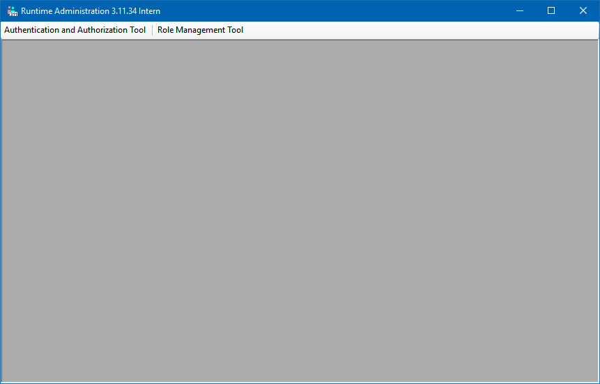

Konfiguration und Start
Um das Werkzeug Runtime Administration starten zu können, muss ein Authentifizierungsdienst zur Verfügung stehen.
Note
Wie Sie einen Authentifizierungsdienst in Betrieb nehmen, entnehmen Sie bitte der Installationsbeschreibung zum Authentication Service.
Starten Sie die Datei RuntimeAdministration.exe. Sie sehen nun das Login Fenster.

Geben sie den Namen des Servers ein, auf dem der Authentifizierungsdienst installiert ist. Wenn der Dienst einen anderen Port als der Standard-Port „20001“ verwendet, dann muss dieser auch angegeben werden – z.B. „Server:12345“.
Geben Sie Benutzername und Passwort eines Benutzers an, der im Authentifizierungsdienst angelegt wurde. Diesem Benutzer muss im Service „AuthenticationService“ mind. ein der beiden Rollen „ManageUsers“ oder „ManageRoles“ zugewiesen sein.
Nach der Installation des Authentifizierungsdienst existiert bereits der Standard-Benutzer „Admin“ mit dem Kennwort „change_on_install“.
Note
Bei jedem Start des Authentifizierungsdienstes wird überprüft, ob bereits ein Benutzer mit dem Namen Admin existiert. Wenn dieser nicht existiert, wird er automatisch mit dem Passwort change_on_install angelegt.
Caution
bei Oracle MUSS der User mit Groß- / Kleinschreibung also als „Admin“ eingegeben werden!!!
Die letzten Anmeldungen (Server + User) werden im Windows Benutzer-Profil gespeichert und können beim nächsten Login über die Server-Combobox ausgewählt werden. Diese Anmeldungen bleiben bei einem Update erhalten.
Sollte beim Login eine Fehlermeldung erscheinen, die daraufhin deutet, dass im Authentication Service ein Fehler aufgetreten ist, so schauen Sie Details zum aufgetretenen Fehler im EventLog des Rechners nach, auf dem der Authentifizierungsdienst läuft.
Nach dem Login öffnet sich das Hauptfenster.
